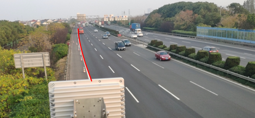

如何查看道路曲率半径
本节介绍通过目测的方式粗略查看道路的曲率半径是否大于1km。如需更准确的道路曲率半径数值，请联系道路管理部门获取相关设计方案。
在路口雷达（或摄像机）的安装位置，以雷达中心线视角望向道路正前方，如
图1
所示。
图1
查看道路曲率

检查雷达正前方200m长的道路能否看清。
如果能够看清200m长的道路，说明该道路的曲率半径大于1km，如
图1
所示的红线。
如果不能看到200m长的道路，说明该道路的曲率半径小于1km，如
图2
所示。
图2
曲率半径过小